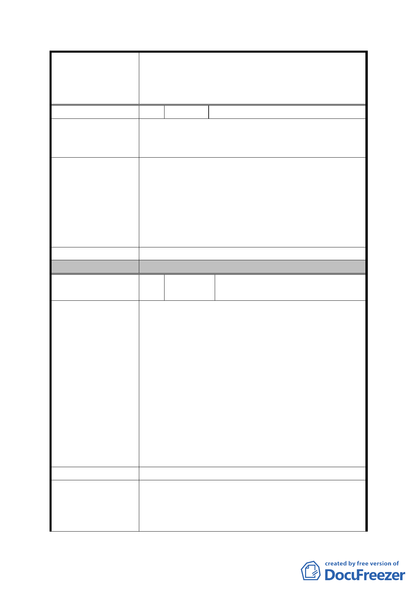

案名
編號
陳情理由
建議辦法
發展局回應意見
委員會決議
編號
陳情理由
建議辦法
發展局回應意見
擬定臺北市內湖區蘆洲里附近工業區細部計畫暨變
更第 2 種工業區為科技工業區 B 區(特)、科技工業
區 B 區、道路用地、護坡用地及變更工業區(供輕工
業使用)為科技工業區 A 區(特)計畫案
4 陳情人 林懋盛
672、621 地號屬科工 B 特區容積率 364%，但重劃完
成後必須遷居於住三特區，容積率只有 200%非常不
合理。
1. 放寬土地歸還比例由現行的 55%提升至 90%，市
府大可不必與民爭利搶土地，要知道越合理的歸
還比例越容易得到居民認同與支持，整個開發案
也越容易成功。
2. 科工 A 特、科工 B 特、科工 B、住三特各區容積
率均調整為 364%，如此方不致有原住 364%的人
必須搬遷至 200%，這種不合理的現象產生。
同細計編號 2。
同編號 2 決議一至三
5 陳情人
湖園實業股份有限公司（方保
泰、方謝月娥、方建富）
1. 臺北市安康路 228 巷 25 號(潭美段一小段 272 地
號)係民國 86 年領有使用執照之地上五層、地下
二層之永久性建築物。
2. 查該地區位於蘆洲里附近工業區土地重劃範圍
內，就開放效益而言，原使用分區為工二，今依
公展圖說變更為科技工業區 B 區(特)，其土地利
用效益並為合理提高，
3. 該地點經地政處公展說明會時初估約需五億八千
餘萬元之拆遷補償費，為排除拆遷阻力降低重劃
費用負擔及依憲法保障人民居住自由之規定，請
將旨述地點剔除於計畫範圍外，以符市府照顧市
民利益之立意。
4. 副本送請臺北市王正德議員研究室。
同上。
一、 經查本案基地由原第 2 種工業區變更為科技
工業區 B 區(特)，其使用組別放寬比照「內
湖科技園區」之「科技工業區 B 區」，以增加
產業進駐彈性，且為促進地區更新開發，鼓
- 30 -